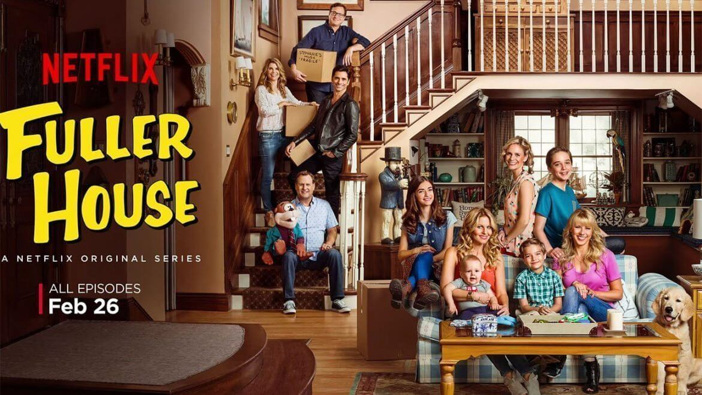
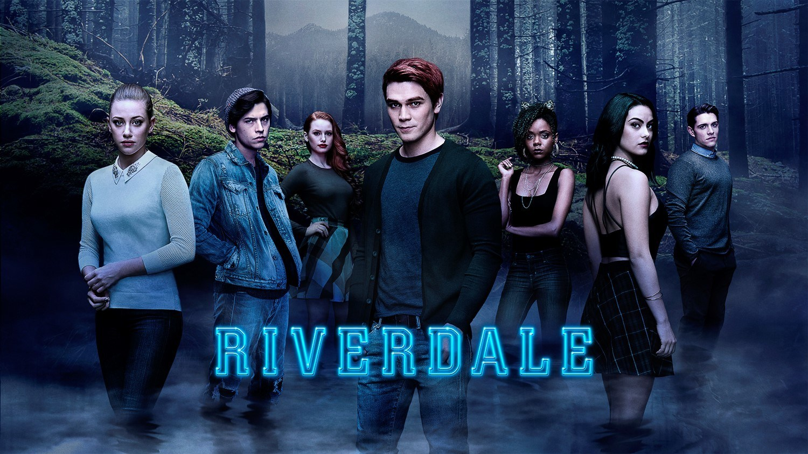

Hello, my name is Tffany , I was born in TX. My Favorite food is Fish
sticks My Favorite T.V show is RiverDale and On my Block. My
favorite hobby is playing volley ball and tennis. My favorite band is
Twice from KpopClick here to see K POP. I like to update my youtube channel on my free time. PLS SUBSCRIBE TO GACHATIFF CUTIE.


My name is, Ariana . my
favroite animal is a dog ,and my favorite food id crispy noodles with
gravey sauce .I like to watch fuller house on netflex. my hobby is
running .my favorite singer is shawn mendez and my favorite song is "If
I cant have you(shawn mendez)".in my free time i like to run and i live
in the US texas.
Ariana an I met in a Girl CodeRunners Camp as partners. We always
worked together on all sorts of projects,whether its Scratch or Working
with Robots. Here are some of our previous scenerio.
Day 1: We did scratch, and made A small Greeting Card and practice coding a small animated movie
Day 2: We built a lego robot and we programmed it to Parallel Park.